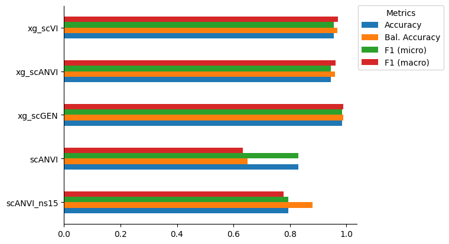

!which pip/projects/dan1/data/Brickman/conda/envs/scvi-1.0.0/bin/pipMeasure classifier accuracies
!which pip/projects/dan1/data/Brickman/conda/envs/scvi-1.0.0/bin/pip%matplotlib inline
import scvi
import squarify
import scgen
import scanpy as sc
import xgboost as xgb
import pandas as pd
import numpy as np
import seaborn as sns
import matplotlib.pyplot as plt
from typing import Tuple
from sklearn.metrics import accuracy_score, balanced_accuracy_score, f1_score
from numba.core.errors import NumbaDeprecationWarning, NumbaPendingDeprecationWarning
import warnings
warnings.simplefilter('ignore', category=NumbaDeprecationWarning)
warnings.simplefilter('ignore', category=NumbaPendingDeprecationWarning)
warnings.simplefilter('ignore', category=FutureWarning)
warnings.simplefilter('ignore', category=UserWarning)
scvi.settings.seed = 0
import os
os.environ['CUDA_VISIBLE_DEVICES'] = '1,2'/projects/dan1/data/Brickman/conda/envs/scvi-1.0.0/lib/python3.10/site-packages/scvi/_settings.py:63: UserWarning: Since v1.0.0, scvi-tools no longer uses a random seed by default. Run `scvi.settings.seed = 0` to reproduce results from previous versions.
self.seed = seed
/projects/dan1/data/Brickman/conda/envs/scvi-1.0.0/lib/python3.10/site-packages/scvi/_settings.py:70: UserWarning: Setting `dl_pin_memory_gpu_training` is deprecated in v1.0 and will be removed in v1.1. Please pass in `pin_memory` to the data loaders instead.
self.dl_pin_memory_gpu_training = (
[rank: 0] Global seed set to 0# %run ../scripts/helpers.pymouse_ct_colors = {
'Zygote': '#7985A5',
'2C': '#B3C81E',
'4C': '#67BB30',
'8C': '#028A46',
'16C': '#657cbd',
'E3.25-ICM': '#fadc8f',
'E3.25-TE': '#5185b9',
'E3.5-ICM': '#f8d06a',
'E3.5-TE': '#7ba9d8',
'E3.5-EPI': '#c38cb0',
'E3.5-PrE': '#d97c81',
'E3.75-ICM': '#F6C445',
'E4.5-TE': '#5a94ce',
'E4.5-EPI': '#B46F9C',
'E4.5-PrE': '#D05B61'
}import scgen
import squarify
import xgboost as xgb
import matplotlib.cm as cm
from matplotlib.colors import Normalize
from sklearn.metrics import accuracy_score, balanced_accuracy_score, f1_scoremouse = sc.read("../results/03_mouse.processed.h5ad")
mouse.obs.stage = mouse.obs.stage.astype('category').cat.reorder_categories(['Zygote', '2C', '4C', '8C', '16C', 'ICM', 'TE', 'EPI', 'PrE'])mouse.obs.ct.value_counts()E3.5-ICM 459
E3.5-PrE 254
E4.5-PrE 207
16C 198
E3.5-EPI 175
8C 115
4C 114
E4.5-EPI 108
E3.5-TE 107
2C 86
E3.75-ICM 48
E3.25-TE 47
E3.25-ICM 40
E4.5-TE 28
Zygote 18
Name: ct, dtype: int64CLFS_ORDER = ['xg_scVI', 'xg_scANVI', 'xg_scGEN', 'scANVI', 'scANVI_ns15']predictions = mouse.obs[['ct']].copy()
xg_clf = xgb.XGBClassifier()
lvae = scvi.model.SCANVI.load("../results/02_mouse_integration/scanvi/")
predictions['scANVI'] = lvae.predict()
lvae = scvi.model.SCANVI.load("../results/02_mouse_integration/scanvi_ns_15/")
predictions['scANVI_ns15'] = lvae.predict()
vae = scvi.model.SCVI.load("../results/02_mouse_integration/scvi/")
xg_clf.load_model("../results/05_scVI_xgboost.json")
predictions['xg_scVI'] = predictions.ct.cat.categories[xg_clf.predict(vae.get_normalized_expression(return_mean=True, return_numpy=True))]
lvae = scvi.model.SCANVI.load("../results/02_mouse_integration/scanvi/")
xg_clf.load_model("../results/05_scANVI_xgboost.json")
predictions['xg_scANVI'] = predictions.ct.cat.categories[xg_clf.predict(lvae.get_normalized_expression(return_mean=True, return_numpy=True))]
mscgen = scgen.SCGEN.load("../results/02_mouse_integration/scgen/")
xg_clf.load_model("../results/05_scGEN_xgboost.json")
predictions['xg_scGEN'] = predictions.ct.cat.categories[xg_clf.predict(mscgen.get_decoded_expression())]INFO File ../results/02_mouse_integration/scanvi/model.pt already downloaded
INFO File ../results/02_mouse_integration/scanvi_ns_15/model.pt already downloaded
INFO File ../results/02_mouse_integration/scvi/model.pt already downloaded
INFO File ../results/02_mouse_integration/scanvi/model.pt already downloaded
INFO File ../results/02_mouse_integration/scgen/model.pt already downloaded mouse_accuracy = pd.DataFrame([
[
accuracy_score(predictions.ct.tolist(), predictions[clf].tolist()),
balanced_accuracy_score(predictions.ct.tolist(), predictions[clf].tolist()),
f1_score(predictions.ct.tolist(), predictions[clf].tolist(), average="micro"),
f1_score(predictions.ct.tolist(), predictions[clf].tolist(), average="macro")
] for clf in predictions.columns[1:]
], index=predictions.columns[1:], columns=['Accuracy', 'Bal. Accuracy', 'F1 (micro)', 'F1 (macro)'])
mouse_accuracy.loc[CLFS_ORDER]| Accuracy | Bal. Accuracy | F1 (micro) | F1 (macro) | |
|---|---|---|---|---|
| xg_scVI | 0.955090 | 0.969146 | 0.955090 | 0.970610 |
| xg_scANVI | 0.944611 | 0.959064 | 0.944611 | 0.961897 |
| xg_scGEN | 0.984531 | 0.988347 | 0.984531 | 0.988487 |
| scANVI | 0.830339 | 0.649818 | 0.830339 | 0.634290 |
| scANVI_ns15 | 0.793413 | 0.879503 | 0.793413 | 0.777624 |
mouse_accuracy.loc[CLFS_ORDER[::-1]].plot(kind='barh')
plt.gca().spines[['right', 'top']].set_visible(False)
plt.gca().legend(title='Metrics', bbox_to_anchor=(0.99, 1.02), loc='upper left')<matplotlib.legend.Legend at 0x7fd1db6a5b40>
icm_accuracy = (sc.metrics.confusion_matrix('ct', 'scANVI_ns15', data=predictions).loc['E3.5-ICM'] * 100).round()
icm_accuracy = icm_accuracy[icm_accuracy != 0].sort_values()
fig = plt.figure(figsize=[4.5,4.5])
ax = fig.add_subplot(111)
squarify.plot(sizes=icm_accuracy,
label=icm_accuracy.index + '\n(' + icm_accuracy.values.astype(str) + ')%',
color=[mouse_ct_colors[ct] for ct in icm_accuracy.index],
text_kwargs={'fontsize': '10'}, ax=ax
)
_ = plt.axis("off")
plt.title('ICM prediction composition')
fig.savefig("../figures/mouse/05_ICM_prediction_zoom.svg")mouse_subset = mouse[predictions[(predictions.ct == "E3.5-ICM") & (predictions.scANVI_ns15.isin(icm_accuracy.index))].index].copy()
mouse_subset.obs['scANVI_ns15'] = predictions.loc[mouse_subset.obs_names, 'scANVI_ns15']
sc.pl.dotplot(mouse_subset, ['gata6', 'nanog', 'sox2', 'pou5f1', 'cdx2', 'pdgfra'], groupby='scANVI_ns15', use_raw=True, standard_scale='var')fig, ax = plt.subplots(1, 5, figsize=[20, 6], sharey=True, sharex=False)
for idx, clf in enumerate(CLFS_ORDER):
conf_df = pd.DataFrame(0, index=predictions.ct.cat.categories, columns=predictions.ct.cat.categories) + sc.metrics.confusion_matrix('ct', clf, data=predictions)
conf_df = conf_df.fillna(0)[predictions.ct.cat.categories]
sns.heatmap(conf_df, linewidths=0.2, cmap='viridis', ax=ax[idx], square=True, cbar=None)
ax[idx].set_title(clf)
ax[idx].set_xticklabels(predictions.ct.cat.categories.tolist(), rotation=45, ha="right", rotation_mode="anchor")
fig.colorbar(cm.ScalarMappable(norm=Normalize(0,1), cmap='viridis'), ax=ax.ravel(), fraction=0.048)
fig.supxlabel('Predicted')
fig.supylabel('Observed')
fig.tight_layout()
fig.savefig("../figures/mouse/05_clf_confusion_mat.svg")writer = pd.ExcelWriter("../results/suppl-tab-2.xlsx", engine="xlsxwriter")
pd.read_csv("../results/05_mouse_classifier_stats.csv", index_col=0).to_excel(writer, sheet_name="mouse_overall")
for clf in mouse_accuracy.index:
df = pd.DataFrame(0, index=predictions.ct.cat.categories, columns=predictions.ct.cat.categories) + sc.metrics.confusion_matrix('ct', clf, data=predictions)
df = df.fillna(0)[predictions.ct.cat.categories]
df.to_excel(writer, sheet_name=f"mouse_{clf}")
writer.close()